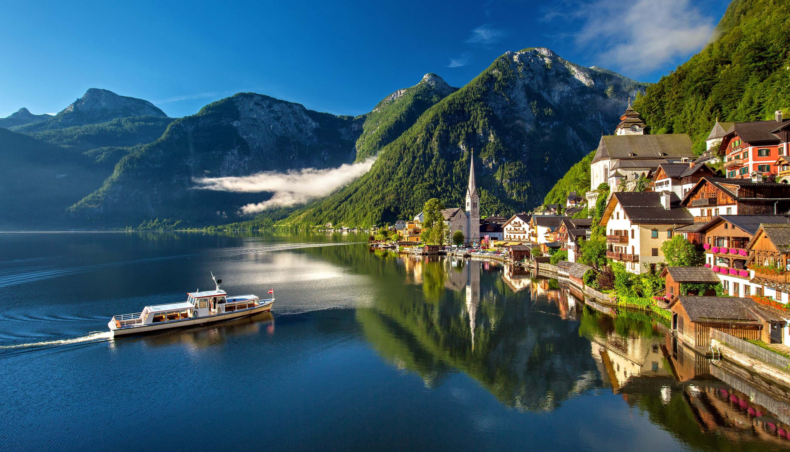

EXPLORE INDIA !
Login/Signup
Community
Hallstatt,
captivates visitors
mirrored in the
and a captivating
a stunning
with its idyllic
tranquil waters of
history that
Austrian village,
alpine setting,
Lake Hallstatt,
spans millennia.
INDIA